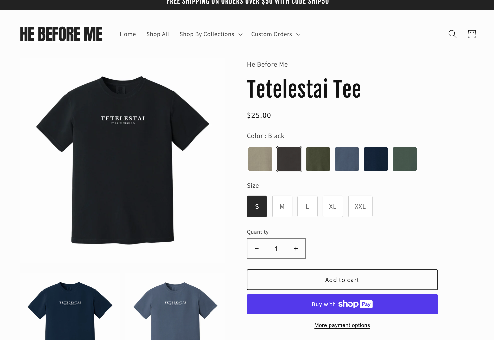

He Before Me is a Christian Small Business I officially opened in January 2023.
The mission of He Before Me is to let the goodness of God be known to all. He Before Me sells
t-shirts, crewnecks, stickers, and digital prints. Opening and operating my business has been a
challenging endeavor, but it sparked my interest in website design. I have gained an appreciation
for understanding user needs and thinking in the eyes of the user. I have had three website
iterations, and am continually trying to improve it to optimize the user's interaction with my
website. I use a third-party service to build and operate my website, but I aspire to enhance and
personalize my website more with increased knowledge in HTML and CSS learned in this class.